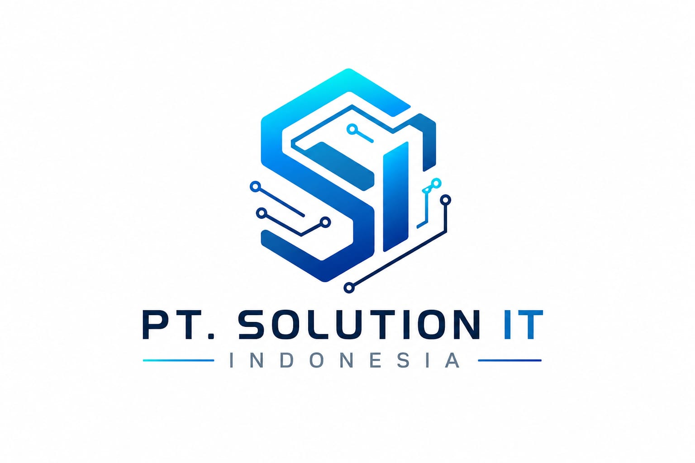

Instalasi Windows Original
Instalasi Windows original yang rapi, aman, dan siap dipakai sesuai kebutuhan Anda.

Preparing your digital experience
PT. Solution IT Indonesia
Your Trusted IT & Hardware Solutions PartnerSolusi Teknologi • Infrastruktur Digital
PT. Solution IT Indonesia membantu sekolah, bisnis, dan instansi membangun infrastruktur, perangkat, dan dukungan teknis yang stabil, terukur, dan modern.
Solusi Instalasi Windows Original
Cepat, Aman, dan Bergaransi

Monitoring, instalasi, pemeliharaan, dan dukungan jarak jauh dengan standar enterprise yang andal.
Identitas Perusahaan
Kami membantu pelanggan dalam instalasi sistem, perbaikan perangkat, dan dukungan teknis dengan pendekatan yang mudah dipahami dan profesional.
Visi, Misi, dan Layanan
Menjadi mitra teknologi yang andal dalam mendukung kebutuhan sistem dan perangkat pelanggan secara berkelanjutan.
Menyediakan layanan instalasi, dukungan, dan perawatan yang cepat, terjangkau, dan mudah dipahami.
Instalasi Windows original yang rapi, aman, dan siap dipakai sesuai kebutuhan Anda.
Instalasi Microsoft Office resmi untuk mendukung aktivitas belajar, bekerja, dan administrasi.
Dukungan teknis yang praktis untuk membantu menyelesaikan masalah perangkat dengan cepat.
Mengapa Memilih Kami
Tim teknisi berpengalaman dengan pendekatan profesional dalam setiap proyek.
Setiap instalasi dan layanan kami didukung standar jaminan kualitas yang jelas.
Respons cepat untuk kebutuhan mendesak dan penanganan permasalahan operasional.
Software dan lisensi resmi memastikan keamanan, legalitas, dan stabilitas sistem.
Tim yang solid, komunikatif, dan siap bekerja sama dengan stakeholder internal Anda.
Dukungan lanjutan memastikan sistem tetap berjalan optimal setelah instalasi selesai.
Portofolio

Proses Kerja
Memahami kebutuhan bisnis, tantangan operasional, dan target performa.
Menganalisa kondisi perangkat, arsitektur jaringan, dan ruang implementasi.
Merancang solusi yang tepat, efisien, dan disesuaikan dengan anggaran.
Melaksanakan instalasi hardware, software, dan infrastruktur secara presisi.
Menguji performa, keamanan, dan stabilitas untuk memastikan hasil maksimal.
Menyediakan dokumentasi yang jelas untuk operasional jangka panjang.
Memberikan dukungan lanjutan agar sistem tetap aman dan siap digunakan.
Harga Paket
Rp 75.000
Instalasi Windows 10 original dengan proses yang rapi, cepat, dan siap digunakan.
Pesan SekarangRp 90.000
Instalasi Windows 11 modern dengan konfigurasi dasar yang siap dipakai untuk aktivitas sehari-hari.
Pesan SekarangTestimoni
Kesimpulan
PT. Solution IT Indonesia berkomitmen untuk menjadi mitra yang andal dalam menyediakan solusi IT, instalasi perangkat keras dan lunak, serta dukungan teknis yang terus berkembang sesuai kebutuhan zaman. Dengan pendekatan profesional, responsif, dan terukur, perusahaan ini mampu mendukung pertumbuhan bisnis, pendidikan, pemerintahan, kesehatan, dan kebutuhan individu secara berkelanjutan.
Ya. Kami menyediakan layanan onsite untuk instalasi, maintenance, troubleshooting, dan support teknis di lokasi pelanggan.
Tentu. Kami telah menangani kebutuhan jaringan, perangkat, server, dan dukungan IT untuk lembaga pendidikan.
Ya. Kami mengutamakan instalasi software original dan lisensi resmi untuk memastikan legalitas dan keamanan sistem.
Ya. Kami menyediakan dukungan lanjutan dan maintenance berkelanjutan sesuai kebutuhan pelanggan.
Insight & Tips
Langkah sederhana untuk menjaga performa laptop tetap stabil dan mengurangi risiko overheating.
Baca SelengkapnyaKonsep perlindungan yang relevan untuk bisnis dengan skala operasional yang terus berkembang.
Baca SelengkapnyaPemahaman yang jelas membantu Anda memilih sistem penyimpanan yang paling sesuai.
Baca SelengkapnyaHubungi Kami
Jangan ragu untuk menghubungi tim kami untuk konsultasi kebutuhan teknologi Anda secara langsung.
Jam Operasional
Tim kami siap membantu kebutuhan IT, instalasi Windows Original, maintenance komputer, jaringan, serta konsultasi teknis selama jam operasional.
Hubungi Kami